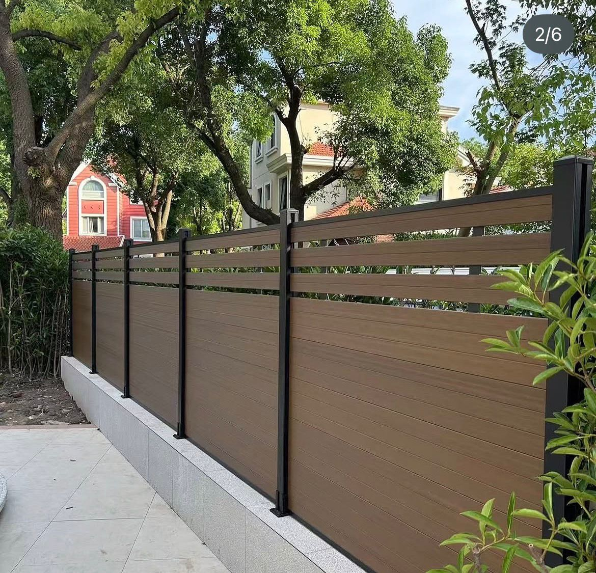

WPC Composite Fencing · The Hills Shire
WPC fencing in The Hills.
Premium composite fencing supplied and installed across The Hills Shire — Castle Hill, Kellyville, Bella Vista and Rouse Hill. A refined, zero-maintenance finish that matches modern rendered facades and delivers true privacy between neighbouring two-storeys. Backed by a written 15-year warranty.
- The HillsSupply & install
- 0yrWritten warranty
- $0Privacy fence from
- 0Paint or stain ever

The Hills' Composite Fence Supplier
A boundary that matches the house.
The Hills Shire is Sydney's estate belt — newer, larger blocks with rendered contemporary and Hamptons-style homes across Kellyville, Rouse Hill and Bella Vista. On homes like these a raw timber paling fence looks like an afterthought. Fencly's co-extruded WPC gives you a crisp, architectural boundary in designer woodgrain tones — sealed for life, never painted, and colour-matched to the facade, gates and cladding as one considered look.
- Refined woodgrain tones to match rendered facades
- Zero-gap privacy panels for solid screening
- Matching WPC gates & cladding for a unified design
- 15-year written warranty on every panel
Local Angle
Why Hills homeowners choose WPC.
The Hills is defined by its homes. Estates through Kellyville, Rouse Hill and North Kellyville are built on generous blocks with rendered, double-storey facades, feature stone and considered landscaping. Owners here invest in the whole picture — which is exactly why a silvered timber paling fence or a plain Colorbond run feels off. WPC lets the boundary belong to the house: charcoal and slate tones sit beautifully against modern render, while teak and walnut warm up a Hamptons or coastal-contemporary scheme.
Privacy is the other Hills priority. Modern lots place homes closer together, and two-storey neighbours can look straight down into a yard or alfresco. Timber lattice sags and rots; a low fence solves nothing. WPC privacy panels install with zero board gaps for a genuinely solid screen, and where you need more height they pair with trellis toppers or taller WPC cladding walls around an alfresco or spa — the same board family, so it all reads as one design.
And because it never needs oiling, painting or replacing, a WPC boundary keeps that showroom finish for the long haul — no weekend maintenance eating into the lifestyle the estate was bought for.
Hills suburbs we serve
- Castle Hill — established family homes and renovations
- Kellyville — large-block new estates
- Bella Vista — premium contemporary homes
- Rouse Hill — newer master-planned estates
- Baulkham Hills — two-storey family boundaries
Elsewhere In Sydney
We install right across Sydney.
Not in The Hills? Explore our other Sydney service areas, or ask for a free measure in your suburb.
Plan Your Fence
Everything you need to decide.
WPC fencing cost
Cost per linear metre — useful for the longer runs on Hills blocks.
See pricing →WPC vs Colorbond
Why capped composite lifts a premium home where steel falls flat.
Compare →Colours & finishes
Charcoal, slate, teak and walnut — match your rendered facade.
View colours →How installation works
Board anatomy, cap layers and the supply-and-install process end to end.
Learn more →The Hills WPC FAQ
WPC fencing in The Hills — your questions.
Do you install in The Hills Shire?
Yes — The Hills is a core service area. We supply and install across Castle Hill, Kellyville, Bella Vista, Rouse Hill and Baulkham Hills, and we're well set up for the newer large-block estates and two-storey homes the district is known for.
How much does WPC fencing cost in The Hills?
Roughly $250 to $380 per linear metre supplied and installed, depending on height, colour, gates and access. Hills blocks often have longer runs, but per-metre rates hold and every quote is a fixed price inclusive of GST. See the full cost breakdown →
Can it match my modern rendered facade?
Yes. WPC comes in refined woodgrain tones from charcoal and slate through to teak and walnut, plus matching WPC cladding — so your fence, gates and feature walls read as one considered design against a render or Hamptons facade.
Is it good for privacy between two-storey homes?
Very. Privacy panels install with zero board gaps for a solid screen, and can be topped with trellis or paired with taller cladding walls where two-storey neighbours overlook the yard.
More questions? See the full FAQ or call 0421 201 613.
Free Measure & Quote
Ready for a WPC fence in The Hills?
Book a free on-site measure — fixed-price quote, inclusive of GST, usually within 24 hours. A boundary that matches the home.